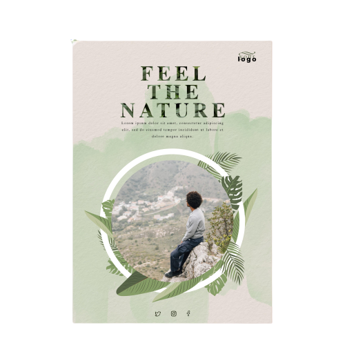
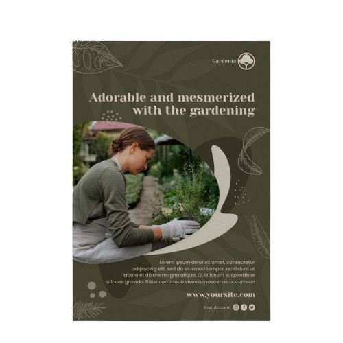

LES LIVRES A LIRE SUR L'OLIVIER, L'OLIVE ET L'HUILE D'OLIVE
>>Voici une petite sélection sur les livres traitant de l'olivier

La culture des oliviers

Oliviers: Plantation
Oliviers: Historique
La culture des oliviers
Oliviers: Plantation
Oliviers: Historique
Olivier et la Préparation des Olives (1) - Max LAMBERT - Editeur Campanile
L'oléologie Déguster l'huile d'olive comme le vin - Monique Brault
Olivier Plantation, taille, entretien, récolte, le gel de 1985 - Félix ERETEO Editeur Solar Nature
Mémoires de l'olivier - G. Rossini - Editeur Equinoxe - 168 pages
L'huile d'olive De l'arbre à la table - P. Anginot et F. Isler. - Editeur. Libris 106 pages
De l'huile et de l'olive: Recettes de chefs - Bernard Giani
Saveurs et parfums de l'huile d'olive - Jacques Chibois Olivier Baussan.
Les Olives de table. De leur cueillette à votre assiette - Fiorella Cottier-Angeli.
L'Olivier Et L'Huile D'Olive Histoire Naturelle de L'Olivier, Culture de L'Olivier, Prparation,
Falsifications Et Usages Des Produits - P. D'Aygalliers.
Les miracles de l'huile d'olive - Tina Lofthouse Gareth Lofthouse Anne-Cécile Guthmann.
Au plaisir de l'olive: Histoire et 170 recettes - Pierre Pinton Brigitte Jeune
Vertus, secrets et saveurs de l'huile d'olive - Blandine Pouzin
L'huile d'olive - Armelle Darondel
LES ECRITS - CITATIONS - DICTONS - POEMES
La veritas es comme l'oli, vèn toujours au dessus
(La verité est comme l'huile, remonte toujours au-dessus)
Ton haleine un jour de janvier
Ou, tirant de grosses bouffées
De ta pipe, charmant fumeur,
Est-ce le train? Sont-ce les fées ?
La cendre du jour qui se meurt?
Soyons justes: c'est l'olivier.
(Jean COCTEAU)
Sous les rameaux d'argent que le Mistral lutine,
Tout un peuple, à genoux, lentement s'agglutine
Pour cueillir pieusement un ancestral trésor.
Alors, tu jailliras, belle huile de lumière,
Sous l'étau du pressoir et la dent de la pierre,
Ò, sang de l'Olympie, nectar aux reflets d'or!
(Maurice Roux)